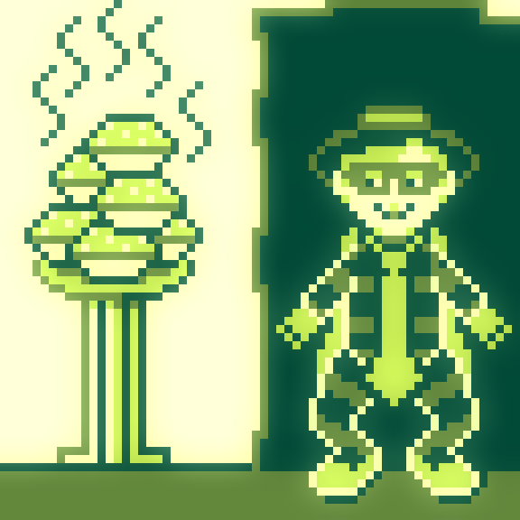
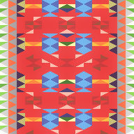
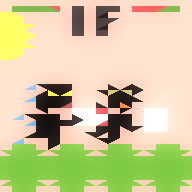
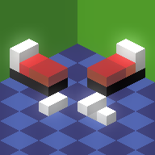
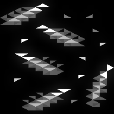
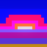
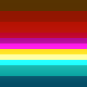
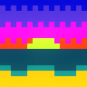
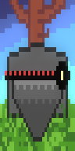
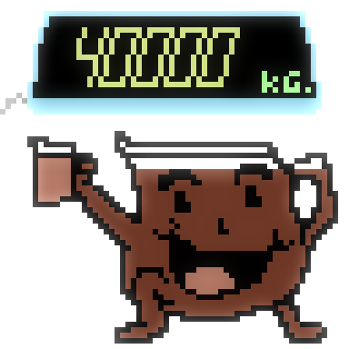

sick bulb by shi in 32x32 #pixels using the NES palette. Visit http://paint.lo4d.net/ to draw your own!
sick bulb by Crustolio in 32x32 #pixels using the NES palette. Visit http://paint.lo4d.net/ to draw your own!
hamburger burglar by shi in 64x64 #pixels using the GameBoy palette. Visit http://paint.lo4d.net/ to draw your own!

hamburger burglar by Crustolio in 64x64 #pixels using the GameBoy palette. Visit http://paint.lo4d.net/ to draw...
https://twitter.com/segphault/status/489949631766220800 @segphault but isnt that, uhm, kind of the exact opposite of what else means in any other context?
pillow fight by JetSet211 in 32x32 #pixels using the Swanky32 palette. Visit http://paint.lo4d.net/ to draw you...

pillow fight by DROSS in 32x32 #pixels using the Swanky32 palette. Visit http://paint.lo4d.net/ to draw your own!


pillow fight by Crustolio in 32x32 #pixels using the Swanky32 palette. Visit http://paint.lo4d.net/ to draw you...

purple sunset by JetSet211 in 16x16 #pixels using the NES palette. Visit http://paint.lo4d.net/ to draw your own!

purple sunset by XIX in 16x16 #pixels using the NES palette. Visit http://paint.lo4d.net/ to draw your own!

purple sunset by Crustolio in 16x16 #pixels using the NES palette. Visit http://paint.lo4d.net/ to draw your own!

instant crab by XIX in 16x16 #pixels using the Spectrum palette. Visit http://paint.lo4d.net/ to draw your own!
instant crab by shi in 16x16 #pixels using the Spectrum palette. Visit http://paint.lo4d.net/ to draw your own!
instant crab by Nacho Rodriguez in 16x16 #pixels using the Spectrum palette. Visit http://paint.lo4d.net/ to dr...
instant crab by yonderboy in 16x16 #pixels using the Spectrum palette. Visit http://paint.lo4d.net/ to draw you...
instant crab by diet_toxin in 16x16 #pixels using the Spectrum palette. Visit http://paint.lo4d.net/ to draw yo...
instant crab by Crustolio in 16x16 #pixels using the Spectrum palette. Visit http://paint.lo4d.net/ to draw you...
go west by Crustolio in 32x32 #pixels using the Swanky32 palette. Visit http://paint.lo4d.net/ to draw your own!

heavy punch by JetSet211 in 64x64 #pixels using the C64 palette. Visit http://paint.lo4d.net/ to draw your own!
